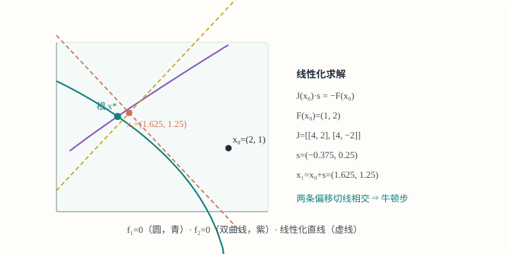
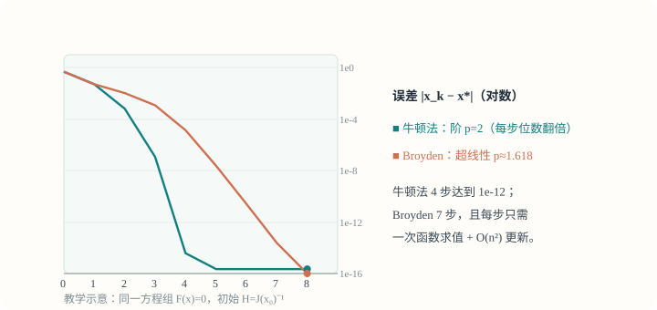

CHAPTER 22 · NUMERICAL ANALYSIS
非线性方程组的牛顿法：雅可比矩阵与拟牛顿
上一章的牛顿法把“求根”换成“不断重化切线”。当未知量从一个变成一个向量，切线要换成一整组偏导数——雅可比矩阵，而“除以导数”要换成“解一个线性系统”。这一章讲清这次推广里什么保持不变、什么必须改变，以及当雅可比贵得离谱时该怎么退让。
01 · 从标量到系统
输入：向量值函数 F: ℝⁿ→ℝⁿ（分量 f₁,…,fₙ）与初值 x₀∈ℝⁿ。输出：近似解 x̃，使 ‖F(x̃)‖ 足够小。假设：每个 fᵢ 连续可微，且根处雅可比 J(x*)=[∂fᵢ/∂xⱼ] 非奇异——这正是“单根”在多维下的对应物。
问题从 f(x)=0 变成 F(x)=0：要同时让 n 个方程成立。几何上，每个 fᵢ(x)=0 是 ℝⁿ 中的一张曲面（零水平集），解就是这 n 张曲面的公共交点。n=2 时是两条曲线相交（图 1）。
单变量牛顿法用切线联系“函数值”与“导数”；多变量里导数不再是一个数，而是一个把向量映到向量的线性映射——雅可比矩阵。它的第 i 行第 j 列 ∂fᵢ/∂xⱼ 回答的是：把第 j 个变量挪动一点点，第 i 个方程会变化多少。整个矩阵因此编码了变量之间全部的耦合关系。
02 · 线性化与牛顿步
和单变量一样，在当前点 x_k 用一阶泰勒展开把 F 线性化：F(x)≈F(x_k)+J(x_k)(x−x_k)。令近似式为零，形式上得到 x_{k+1}=x_k−J(x_k)⁻¹F(x_k)。但实践中从不求逆矩阵，而是把它改写成一个线性方程组：先解出牛顿步 s，再更新。
这一步把“非线性求根”拆成“线性求解”的重复：每次迭代解一个 n×n 线性系统。单变量时除以 f′，多变量时解 J s=−F，二者是同一个“沿切空间走到零”的思想。把 F(x*)=0 在 x_k 处展开并代入 x*=x_k+e_k，可得与一维完全平行的误差递推：
所以二次收敛在多变量下原样成立：只要 J(x*) 非奇异、F 足够光滑、初值落在吸引域内，误差范数每步平方下降，有效位数翻倍。常数 C 由 J(x*)⁻¹ 与二阶偏导的大小共同决定——这也预告了下一节的隐患：J 越接近奇异，C 越大，收敛越脆。

f₁=x²+y²−4=0、紫线 f₂=x²−y²−1=0，解为 x*≈(1.5811, 1.2247)。从 x₀=(2,1) 出发，两个线性化方程 2x+y=4.5、2x−y=2 相交于 x₁=(1.625, 1.25)。这些直线并不经过 x₀，而是被 F(x₀) 平移过的切线——正是“解 Js=−F”的几何含义；迭代值为真实计算结果。03 · 雅可比矩阵的两条路
每步都要 J(x_k)。两条路：解析雅可比——手推或用符号/自动微分生成偏导表达式，精度最高、收敛性最好；有限差分——用差商逐列近似。后者无需解析导数，但每列一次额外函数求值，共 n 次。
这里有一个容易被记混的陷阱：有限差分的步长 h 不是越小越好。前向差分的截断误差是 O(h)，而相减 f(x+he_j)−f(x) 的舍入误差约为 ε_machine·|f|/h；两者相加在 h≈√ε_machine·max(1,|x_j|) 处取到最优。取 h=10⁻¹⁶ 时舍入误差反而淹没结果——这与第 13 章数值微分的结论完全一致。
代价对比：解析雅可比只需 n² 个偏导（往往有稀疏结构可利用），有限差分则需要 n 次完整函数评估；而解线性系统 J s=−F 本身需要 O(n³) 次运算（稠密情形）。当 n 很大时，O(n³) 成为主要瓶颈，这正是拟牛顿法的出发点。
04 · 拟牛顿与 Broyden
雅可比每步重算并分解太贵。拟牛顿法换一个思路：保留一个近似雅可比，用低秩更新逐步修正它，而不重算。记 s=x_{k+1}−x_k、y=F(x_{k+1})−F(x_k)。要求新矩阵满足割线条件 J_{k+1}s=y，这是多维版“用差商代替导数”。
在所有满足 J_{k+1}s=y 的矩阵中，它离 J_k 最近（Frobenius 范数意义下）——所以这叫“最小改变”更新。更妙的技巧是直接更新近似逆 H_k≈J_k⁻¹，用 Sherman–Morrison 公式：
于是每步只用 O(n²) 次向量/矩阵运算得到牛顿方向 s=−H_kF(x_k)，省掉了 O(n³) 的分解。代价是收敛变慢：Broyden 法一般只保证超线性收敛，而不是二次。常见分析给出的阶约为黄金分割比 p≈1.618（或写作超线性）——它以每步更便宜换取每步进步更少，见图 2。

F(x)=0、同一起点 x₀=(2,1)、初始 H=J(x₀)⁻¹ 下的误差范数。牛顿法（青）：4.8e−1→5.1e−2→6.4e−4→1.1e−7→3.8e−15，位数约翻倍；Broyden（橙）：4.8e−1→5.1e−2→1.0e−2→1.2e−3→1.4e−5→2.4e−8→2.6e−11→2.4e−14。数据为本文教学演示的真实迭代值。05 · 失败边界与全局化
多变量牛顿法继承了一维版的全部脾气，而且更严重：J(x_k) 可能奇异或接近奇异，此时 Js=−F 无解或步长巨大；远处线性化可能把迭代带到更远的地方。常见失败模式：
| 场景 | 原因 | 表现 | 对策 |
|---|---|---|---|
J 奇异或病态 | 零点处雅可比退化 | 线性解溢出 / 步长爆炸 | 阻尼 + 信赖域；或拟牛顿 |
| 初值太差 | 线性化与实际不符 | 振荡 / 发散 | 线搜索、信赖域、延拓法 |
| 变量尺度悬殊 | 列尺度差几个量级 | 条件数大，步长偏向小尺度变量 | 先做变量缩放/均衡 |
| 忽略非对角项 | 丢失耦合信息 | 残差不降反升 | 用自动微分/符号计算得完整 J |
全局化就是给牛顿方向套上“安全绳”，保证每步残差不增：
- 线搜索：沿牛顿方向
s取步长α（如 Armijo 回溯），使‖F(x_k+αs)‖充分下降；牛顿方向在非奇异处是下降方向，所以这通常可行。 - 信赖域：在当前点周围限定一个区域，在区内极小化线性/二次模型，根据实际下降与预测下降的比例放大或缩小区域。它能处理雅可比接近奇异的情形，比线搜索更鲁棒。
- 延拓（同伦）法：构造
H(x,t)=(1−t)F₀(x)+tF(x)=0，从有显式解的F₀（如F₀(x)=x−a）出发，让t:0→1缓慢变化，每一步用小步长的解做下一步初值。适合初值极难获取的高度非线性问题。
06 · 实验与选型
用方程组 x²+y²=4、x²−y²=1（根 x*≈(1.5811, 1.2247)），从 x₀=(2,1) 出发，对比“解析雅可比 + 牛顿步”与“有限差分雅可比”，看误差如何下降：
失败边界（可验证）：第一，J(x*) 必须非奇异，否则牛顿步无定义；第二，x₀ 必须落在吸引域内；第三，把雅可比近似为对角阵会丢掉交叉耦合，迭代可能直接不降。下面的断言把这三件事变成可重跑的实验：
import numpy as np
F = lambda x: np.array([x[0]**2 + x[1]**2 - 4.0,
x[0]**2 - x[1]**2 - 1.0])
J = lambda x: np.array([[2*x[0], 2*x[1]],
[2*x[0], -2*x[1]]])
root = np.array([np.sqrt(2.5), np.sqrt(1.5)]) # x* ≈ (1.5811, 1.2247)
def newton(x0, jac=J, tol=1e-12, nmax=40):
x = np.array(x0, float)
for k in range(1, nmax+1):
s = np.linalg.solve(jac(x), -F(x)) # J s = -F
x = x + s
if np.linalg.norm(x - root) < tol:
return x, k
raise RuntimeError("未收敛")
def fd_jac(x, h=1e-8):
n = len(x); Jm = np.zeros((n, n))
for j in range(n):
xp = x.copy(); xp[j] += h
Jm[:, j] = (F(xp) - F(x)) / h
return Jm
xN, kN = newton([2.0, 1.0]) # 解析雅可比
assert np.allclose(xN, root, atol=1e-12) and kN <= 6
xF, kF = newton([2.0, 1.0], jac=fd_jac)
assert np.allclose(xF, root, atol=1e-7) # 有限差分误差略大，仍收敛
# 错误做法：只保留对角线，丢失非对角耦合
Jd = lambda x: np.diag(np.diag(J(x)))
try:
newton([2.0, 1.0], jac=Jd)
diag_ok = True
except RuntimeError:
diag_ok = False
assert diag_ok is False # 对角近似在吸引域外/不收敛
print("newton", kN, "| fd", kF, "| diag converged?", diag_ok)这段代码同时验证了三件事：解析雅可比下 4 步达 10⁻¹²（二次收敛）、有限差分雅可比同样收敛但精度受 h 限制、丢掉非对角项会导致迭代失败。scipy.optimize.root 的 hybr、lm、broyden1 等后端就是我们这一章讲的方法的封装。
| 方法 | 每步计算 | 收敛阶 | 适用场景 |
|---|---|---|---|
| 牛顿法 | J + O(n³) 线性解 | 二次 | n 不大、解析/自动微分可得 |
| Broyden 拟牛顿 | 一次 F + O(n²) 更新 | 超线性（≈1.618） | n 中等、雅可比昂贵 |
| 延拓法 + 阻尼牛顿 | 多步牛顿 | 每段二次 | 高度非线性、初值难获取 |
原始资料与延伸阅读
本章将已知结论与本文独立构造的数值示例区分开：二次收敛、Broyden 超线性及其约 1.618 的阶为理论结果；图 1、图 2 与实验中的迭代值和步数均为本文教学演示（已简化）。
- SciPy · scipy.optimize.root：
hybr、lm、broyden1/2等非线性方程组求解器的统一接口与参数。 - C. G. Broyden, A class of methods for solving nonlinear simultaneous equations, Math. Comp. 19 (1965) 577–593。割线条件与秩一最小改变更新。
- P. Deuflhard, Newton Methods for Nonlinear Problems, Springer, 2011（doi:10.1007/978-3-642-23899-4）。仿射不变收敛理论与阻尼/信赖域全局化。
- Nicholas J. Higham, Accuracy and Stability of Numerical Algorithms, SIAM 第二版, 2002。线性系统求解的误差与条件数。